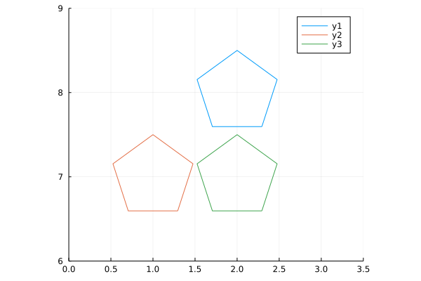

Another ‘small learning project’ for me as I continue to learn Julia. I’ve said many times that small projects with a defined goal are one of the best ways to learn, at least for me. This one was inspired by yet another Reddit post
Another ‘small learning project’ for me as I continue to learn Julia. I’ve said many times that small projects with a defined goal are one of the best ways to learn, at least for me. This one was inspired by yet another Reddit post
These are at least reminiscent of Lissajous curves but they primarily just looked pretty cool - that animation is very nicely put together.
That graphic was made using Typescript which is itself neat to begin with, but it looked like something that Julia might be well-suited to, at least the parts I’ve learned so far. It seems to involve interpolating between points and animation, both of which I recently covered on my mini blog.
Better yet, it appeared that matrix operations might be a useful component, for which Julia seems particularly well-suited.
The first thing I needed to do was to get a polygon plotted in Julia. This already challenged my existing
knowledge, but that’s where the learning happens. I dabbled with the Shape class and didn’t get very far. I found
some other implementations that plotted shapes, but none (at least that I understood) that produced a set of
points I could interpolate between.
I ended up defining my own function that calculates the vertices of an n-sided polygon with a bit of math. There’s very likely already something that does it, but it failed the discoverability aspect. The function I came up with is
"""
vertices(center, R, n[, closed])
# Arguments
- `center::Point`: center of polygon
- `R::Real`: circumradius
- `n::Int`: number of sides
- `closed::Bool`: should the first point be repeated?
Polygon has a flat bottom and points progress counterclockwise
starting at the right end of the base
The final point is the starting point when closed = true
"""
function vertices(center::Point, R::Real, n::Int, closed::Bool=true)
X = center[1] .+ R * cos.(π/n .* (1 .+ 2 .* (0:n-1)) .- π/2)
Y = center[2] .+ R * sin.(π/n .* (1 .+ 2 .* (0:n-1)) .- π/2)
res = permutedims([X Y])
## append the start point if closed
if closed
res = hcat(res, res[:,1])
end
return res
endThis is where playing around with code and data where you know what you want but
not how to produce it is the most useful. Coming from R, I was at risk of trying to
create a data.frame of x and y points, but Arrays make more sense here. Getting
the points in the right structure was the biggest learning experience for me - combining
Arrays of Points doesn’t quite work in the way I expect coming from R, but I think this works.
I did play with the idea of making my own struct for this group of Points, but even though
(I think) it inherited from AbstractArray, none of the Array methods seemed to work for it - more
to learn for next time!
I wanted to make sure that the points I generated here seem to make sense, so I can plot them. Getting
the plots to work requires using Plots, and Point comes from GeometryBasics, so
using Plots
import GeometryBasics: Pointthen plotting the vertices of a polygon is as easy as
a = vertices(Point(0,0), 1, 5, true);
plot(a[1,:], a[2,:], xlim = (-1.2, 1.2), ylim = (-1.2, 1.2), ratio = 1)
scatter!(a[1,:], a[2,:])
And just by changing the number of vertices
a = vertices(Point(0,0), 1, 6, true);
plot(a[1,:], a[2,:], xlim = (-1.2, 1.2), ylim = (-1.2, 1.2), ratio = 1)
scatter!(a[1,:], a[2,:])
I find it somewhat odd that plot doesn’t have an Array method and I need to explicitly slice out the
x and y arguments, but perhaps I’m “holding it wrong”?
Next I wanted to interpolate points between these vertices. I played with interpolation in Julia in my last mini blog post so I knew that function was
interpolate(a, b) = t -> ((1.0 - t) * a + t * b)Interpolating between vertices meant interpolating between any two vertices, then repeating that over pairs. Taking the case of two vertices first
"""
_interPoints(pts, steps, slice)
# Arguments
- `pts::Array`: Array of `Point`s representing a polygon
- `steps::Int`: number of points to interpolate
- `slice::Int`: which polygon vertex to begin with; points will be interpolated to the next vertex
This is an internal function to interpolate points between
two vertices of a polygon. It is intended to be used
in a `map` across slices of a polygon.
"""
function _interPoints(pts::Array, steps::Int, slice::Int)
int = interpolate(pts[:,slice], pts[:,slice+1])
explode = [int(t) for t in range(0,1,length=steps)]
return hcat(explode...)
endwhich I can test with
a = vertices(Point(0,0), 1, 5, true);
b = _interPoints(a, 10, 1);
plot(a[1,:], a[2,:], ratio = 1)
scatter!(b[1,:], b[2,:])Then, mapping across pairs of points is just
"""
interPoints(pts, steps)
# Arguments
- `pts::Array`: Array of `Point`s representing a polygon
- `steps::Int`: number of points to interpolate between each pair of vertices
This takes an `Array` of `Point`s representing polygon vertices and interpolates between the vertices
"""
function interPoints(pts::Array, steps::Int)
res = map(s -> _interPoints(pts, steps, s), 1:(size(pts,2)-1))
return hcat(res...)
endPlotting all these points
a = vertices(Point(0,0), 1, 5, true);
b = interPoints(a, 10);
plot(b[1,:], b[2,:], xlim = (-1.2, 1.2), ylim = (-1.2, 1.2), ratio = 1)
scatter!(b[1,:], b[2,:])
Animating these points is as simple as
anim = @animate for t in 1:size(b,2)
plot(b[1,:], b[2,:], xlim = (-1.2, 1.2), ylim = (-1.2, 1.2), ratio=1)
scatter!([b[1,t]], [b[2,t]], markersize=8)
end
gif(anim, fps = 12)
and I think that’s pretty great progress towards what I want to make. Now I just need to run more of these at different speeds, and find the intersections of them.
Taking the intersection problem first, I just want to create two polygons and extract the x values from one and
the y values from the other. Simple enough
"""
Find the intersection of two Arrays (representing polygons)
# Arguments
- `a::Array`: first polygon (for x values)
- `b::Array`: second polygon (for y values)
Take the x values from a and the y values from b
"""
function intersection(a::Array, b::Array)
permutedims(hcat([(a[1, :])...], [(b[2, :])...]))
endpermutedims was the big win for me here - I naively expected to be able to transpose
an Array but that ends up with some LinearAlgebra.Adjoint mess and I got confused
[1 2; 3 4]## 2×2 Array{Int64,2}:
## 1 2
## 3 4
[1 2; 3 4]'## 2×2 Adjoint{Int64,Array{Int64,2}}:
## 1 3
## 2 4Anyway, this appears to be able to take the intersection of two Arrays. Let’s plot it!
t1 = interPoints(vertices(Point(2,8), 0.5, 5), 10);
t2 = interPoints(vertices(Point(1,7), 0.5, 5), 10);
tx = intersection(t1, t2);
plot(t1[1,:], t1[2,:], xlim = (0,3.5), ylim = (6,9), ratio = 1)
plot!(t2[1,:], t2[2,:])
plot!(tx[1,:], tx[2,:])
Perfect! Now I just need to do it a bunch more times (at different ‘speeds’) and animate it.
I originally worked out the array math by hand and found a suitable number of points to plot for any given polygon and which multiplicative factors I could use, then I worked backwards to formalise it into a function
"""
speed_factor(poly, speed)
# Arguments
- `poly::Array`: Array of `Point`s representing a polygon
- `speed::Real`: mulitiplicative factor representing how the number of times a polygon should be traversed
"""
function speed_factor(poly::Array, speed::Real)
if (speed % 1 == 0)
res = repeat(poly, outer = (1,Int(speed)))
else
n = Int(floor(speed / 1))
res = repeat(poly, outer=(1,n))
n_rem = Int(speed*size(poly,2)-size(res,2))
res = hcat(res, poly[:,1:n_rem])
end
res
endIf I create a polygon of 72 interpolated points, I can create another with the same number of
points but with larger gaps between them. This means the ‘faster’ polygon will loop around some n>1 number
of times.
r = 0.4; # circumradius for the polygon
d = 3; # number of vertices
# Both produce a 2x72 Array{Float64,2}
tx1 = interPoints(vertices(Point(2,6), r, d), 24)
tx2 = speed_factor(interPoints(vertices(Point(3,6), r, d), 16) , 1.5) I can create a series of these, say, at speeds of 1, 1.5, 2, 2.4, and 3. These are just nice numbers which are all integer divisors of the largest number of points (72)
## n = 3
r = 0.4;
d = 3;
tx1 = interPoints(vertices(Point(2,6), r, d), 24)
tx2 = speed_factor(interPoints(vertices(Point(3,6), r, d), 16), 1.5)
tx3 = speed_factor(interPoints(vertices(Point(4,6), r, d), 12), 2)
tx4 = speed_factor(interPoints(vertices(Point(5,6), r, d), 10), 2.4)
tx5 = speed_factor(interPoints(vertices(Point(6,6), r, d), 8), 3)
ty1 = interPoints(vertices(Point(1,5), r, d), 24)
ty2 = speed_factor(interPoints(vertices(Point(1,4), r, d), 16), 1.5)
ty3 = speed_factor(interPoints(vertices(Point(1,3), r, d), 12), 2)
ty4 = speed_factor(interPoints(vertices(Point(1,2), r, d), 10), 2.4)
ty5 = speed_factor(interPoints(vertices(Point(1,1), r, d), 8), 3)The variable name is arbitrary, but these are a sequence of polygons along the x and y axes of
some plot area.
One thing that I really like about Julia is that anything can be in an Array (similar to lists in R) so
I can combine these groups of points into an Array of Arrays
allx = [tx1, tx2, tx3, tx4, tx5]
ally = [ty1, ty2, ty3, ty4, ty5]Now, how to calculate all the intersections? Julia of course does “broadcasting” where we can take some operation and (in R parlance) “vectorize it”. That initially led me to
intersection.(allx, ally)which does indeed do that - it produces a 5-element Array{Array{Float64,2},1} but that’s not what I wanted…
this only calculates the ‘diagonal’ of intersection(tx1, ty1), intersection(tx2, ty2), …
Thankfully, Julia also has list comprehensions, so the full ‘matrix’ of intersections is actually
allint = [intersection(x, y) for x in allx, y in ally]which produces a 5×5 Array{Array{Float64,2},2} - the full matrix! With that in place, we now have all the
pieces we need, so we just need to plot them.
The following sets up a plot on every ‘timestep’ (one per point in the interpolation) where it redraws the canvas,
with the progressive drawing of each polygon and the intersections, plus some tracking lines along the x and y
extractions. One of the very neat things I entirely failed to appreciate earlier was the concept of
enumerated objects - Julia knows that if I ask for x in obj I want to iterate over all the elements
bbox = Point(6.5,6.5);
anim3 = @animate for t in 1:size(tx1,2)
plot(xlim=(0,bbox[2]), ylim=(0,bbox[2]),
legend=false, ratio=1, axis=nothing, border=:none,
background_color="black", size=(1200,1200))
for p in 1:size(allx,1)
plot!(allx[p][1,1:t], allx[p][2,1:t], color=p, linewidth=6)
plot!(ally[p][1,1:t], ally[p][2,1:t], color=p, linewidth=6)
plot!([allx[p][1,t], allx[p][1,t]], [0.5, allx[p][2,t]], color="grey", alpha=0.5, linewidth=5)
plot!([ally[p][1,t], bbox[2]], [ally[p][2,t], ally[p][2,t]], color="grey", alpha=0.5, linewidth=5)
end
for p in allint
plot!(p[1,1:t], p[2,1:t], color="blue", linewidth=5)
end
end
gif(anim3, "n3.gif", fps=12)And, finally, the result

With all that in place, it’s reasonably straightforward to adapt this to other polygons. For n=4
r = 0.4;
d = 4;
tx1 = interPoints(vertices(Point(2,6), r, d), 24)
tx2 = speed_factor(interPoints(vertices(Point(3,6), r, d), 16), 1.5)
tx3 = speed_factor(interPoints(vertices(Point(4,6), r, d), 12), 2)
tx4 = speed_factor(interPoints(vertices(Point(5,6), r, d), 10), 2.4)
tx5 = speed_factor(interPoints(vertices(Point(6,6), r, d), 8), 3)
ty1 = interPoints(vertices(Point(1,5), r, d), 24)
ty2 = speed_factor(interPoints(vertices(Point(1,4), r, d), 16), 1.5)
ty3 = speed_factor(interPoints(vertices(Point(1,3), r, d), 12), 2)
ty4 = speed_factor(interPoints(vertices(Point(1,2), r, d), 10), 2.4)
ty5 = speed_factor(interPoints(vertices(Point(1,1), r, d), 8), 3)
allx = [tx1, tx2, tx3, tx4, tx5]
ally = [ty1, ty2, ty3, ty4, ty5]
allint = [intersection(x, y) for x in allx, y in ally]
bbox = Point(6.5,6.5);
anim4 = @animate for t in 1:size(tx1,2)
plot(xlim=(0,bbox[2]), ylim=(0,bbox[2]),
legend=false, ratio=1, axis=nothing, border=:none,
background_color="black", size=(1200,1200))
for p in 1:size(allx,1)
plot!(allx[p][1,1:t], allx[p][2,1:t], color=p, linewidth=6)
plot!(ally[p][1,1:t], ally[p][2,1:t], color=p, linewidth=6)
plot!([allx[p][1,t], allx[p][1,t]], [0.5, allx[p][2,t]], color="grey", alpha=0.5, linewidth=5)
plot!([ally[p][1,t], bbox[2]], [ally[p][2,t], ally[p][2,t]], color="grey", alpha=0.5, linewidth=5)
end
for p in allint
plot!(p[1,1:t], p[2,1:t], color="blue", linewidth=5)
end
end
gif(anim4, "n4.gif", fps=12)n=5 (very similar code)
and n=6
I was extremely happy to see these come together, and I’m genuinely surprised by how little code it took. I could certainly imagine trying to do the same in R, but I have doubts that it would come together quite so cleanly.
This is definitely still part of my journey towards learning Julia, so if there’s something in here you can spot that I could have done better, I do encourage you to let me know! Either here in the comments or on Twitter.
The code for generating all of this can be found here.
## ─ Session info ───────────────────────────────────────────────────────────────
## setting value
## version R version 4.1.2 (2021-11-01)
## os Pop!_OS 21.04
## system x86_64, linux-gnu
## ui X11
## language en_AU:en
## collate en_AU.UTF-8
## ctype en_AU.UTF-8
## tz Australia/Adelaide
## date 2022-05-12
##
## ─ Packages ───────────────────────────────────────────────────────────────────
## package * version date lib source
## blogdown 1.8 2022-02-16 [1] CRAN (R 4.1.2)
## bookdown 0.24 2021-09-02 [1] CRAN (R 4.1.2)
## brio 1.1.1 2021-01-20 [3] CRAN (R 4.0.3)
## bslib 0.3.1 2021-10-06 [1] CRAN (R 4.1.2)
## cachem 1.0.3 2021-02-04 [3] CRAN (R 4.0.3)
## callr 3.7.0 2021-04-20 [1] CRAN (R 4.1.2)
## cli 3.2.0 2022-02-14 [1] CRAN (R 4.1.2)
## crayon 1.5.0 2022-02-14 [1] CRAN (R 4.1.2)
## desc 1.4.1 2022-03-06 [1] CRAN (R 4.1.2)
## devtools 2.4.3 2021-11-30 [1] CRAN (R 4.1.2)
## digest 0.6.27 2020-10-24 [3] CRAN (R 4.0.3)
## ellipsis 0.3.2 2021-04-29 [1] CRAN (R 4.1.2)
## evaluate 0.14 2019-05-28 [3] CRAN (R 4.0.1)
## fastmap 1.1.0 2021-01-25 [3] CRAN (R 4.0.3)
## fs 1.5.0 2020-07-31 [3] CRAN (R 4.0.2)
## glue 1.6.1 2022-01-22 [1] CRAN (R 4.1.2)
## htmltools 0.5.2 2021-08-25 [1] CRAN (R 4.1.2)
## jquerylib 0.1.4 2021-04-26 [1] CRAN (R 4.1.2)
## jsonlite 1.7.2 2020-12-09 [3] CRAN (R 4.0.3)
## JuliaCall 0.17.4 2021-05-16 [1] CRAN (R 4.1.2)
## knitr 1.37 2021-12-16 [1] CRAN (R 4.1.2)
## lifecycle 1.0.1 2021-09-24 [1] CRAN (R 4.1.2)
## magrittr 2.0.1 2020-11-17 [3] CRAN (R 4.0.3)
## memoise 2.0.0 2021-01-26 [3] CRAN (R 4.0.3)
## pkgbuild 1.2.0 2020-12-15 [3] CRAN (R 4.0.3)
## pkgload 1.2.4 2021-11-30 [1] CRAN (R 4.1.2)
## prettyunits 1.1.1 2020-01-24 [3] CRAN (R 4.0.1)
## processx 3.5.2 2021-04-30 [1] CRAN (R 4.1.2)
## ps 1.5.0 2020-12-05 [3] CRAN (R 4.0.3)
## purrr 0.3.4 2020-04-17 [3] CRAN (R 4.0.1)
## R6 2.5.0 2020-10-28 [3] CRAN (R 4.0.2)
## Rcpp 1.0.6 2021-01-15 [3] CRAN (R 4.0.3)
## remotes 2.4.2 2021-11-30 [1] CRAN (R 4.1.2)
## rlang 1.0.1 2022-02-03 [1] CRAN (R 4.1.2)
## rmarkdown 2.13 2022-03-10 [1] CRAN (R 4.1.2)
## rprojroot 2.0.2 2020-11-15 [3] CRAN (R 4.0.3)
## rstudioapi 0.13 2020-11-12 [3] CRAN (R 4.0.3)
## sass 0.4.0 2021-05-12 [1] CRAN (R 4.1.2)
## sessioninfo 1.1.1 2018-11-05 [3] CRAN (R 4.0.1)
## stringi 1.5.3 2020-09-09 [3] CRAN (R 4.0.2)
## stringr 1.4.0 2019-02-10 [3] CRAN (R 4.0.1)
## testthat 3.1.2 2022-01-20 [1] CRAN (R 4.1.2)
## usethis 2.1.5 2021-12-09 [1] CRAN (R 4.1.2)
## withr 2.5.0 2022-03-03 [1] CRAN (R 4.1.2)
## xfun 0.30 2022-03-02 [1] CRAN (R 4.1.2)
## yaml 2.2.1 2020-02-01 [3] CRAN (R 4.0.1)
##
## [1] /home/jono/R/x86_64-pc-linux-gnu-library/4.1
## [2] /usr/local/lib/R/site-library
## [3] /usr/lib/R/site-library
## [4] /usr/lib/R/library